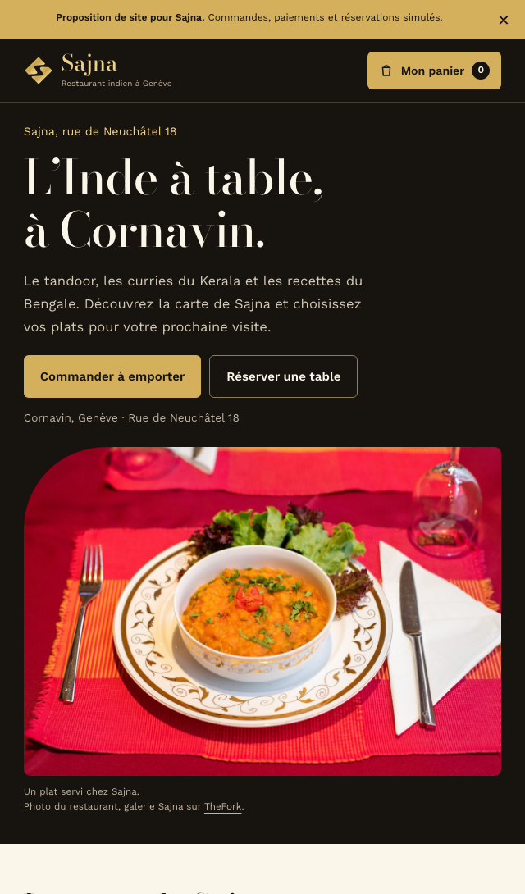
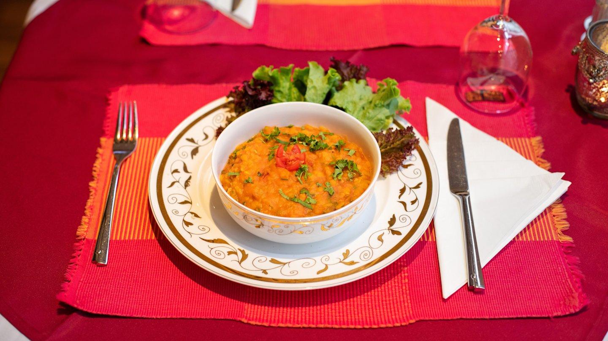
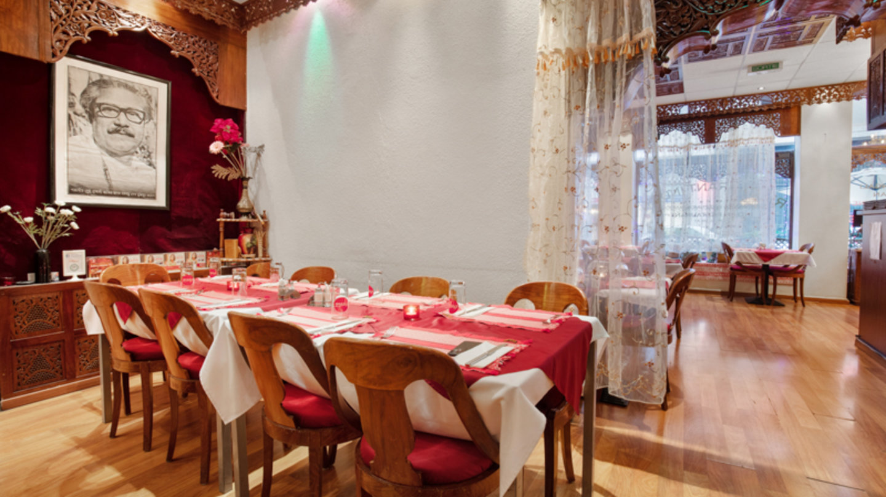
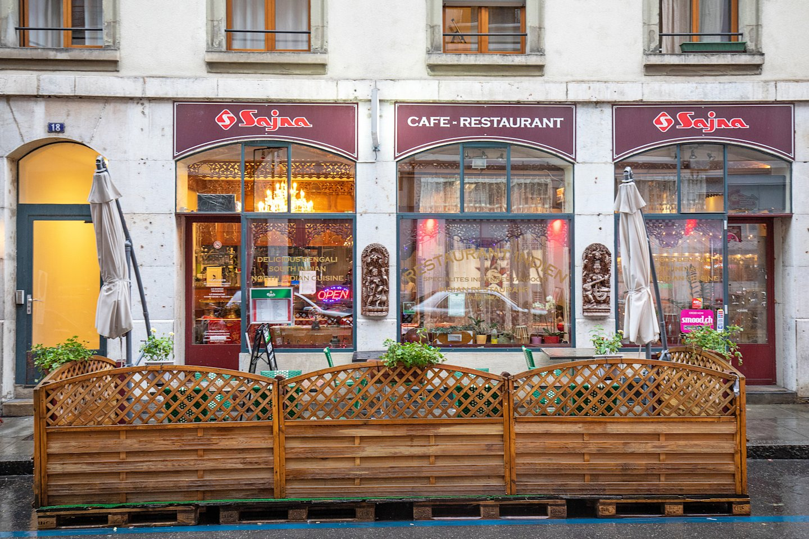

Voici votre prochain site Sajna.
Vos plats, votre adresse, une carte facile à consulter. Et un parcours simple pour commander à emporter ou réserver une table.
Une démo à explorer sur votre téléphone. Les commandes, paiements et réservations sont simulés.

Une adresse en ligne aussi claire que votre enseigne.
Aujourd’hui, les pages présentées ci-dessous donnent deux expériences différentes. L’idée : retrouver la même identité et le bon lien, partout.


Une seule destination pour vos clients
Choisir votre adresse principale, puis l’utiliser sur Google, vos réseaux et vos supports imprimés.
Votre identité dès le premier écran
Votre logo, la salle et vos plats. Un client doit reconnaître Sajna avant même d’ouvrir la carte.
Les actions utiles, tout de suite
Voir la carte, commander, réserver et trouver le restaurant, sans chercher dans plusieurs pages.
Constats fondés sur les captures présentées. Les accès aux domaines et les informations du restaurant seront vérifiés avec vous avant mise en ligne.
Ce que l’on peut faire ensemble.
Une base claire, pensée pour Sajna et pour les clients qui vous découvrent sur leur téléphone.
Votre site et la commande en direct
Une carte lisible, les informations pratiques et un parcours de retrait. La démo permet déjà d’ajouter des plats au panier et de choisir un créneau.
Les paiements et les réservations seront activés après validation avec vous.Vos plats, bien présentés
Des photos de vos assiettes, une carte à jour et des descriptions simples. La même présentation peut ensuite servir sur le site et les plateformes.
Google et Uber Eats, en cohérence
Vérifier les horaires, les liens, la carte et les visuels. Aligner les informations pour que les clients retrouvent facilement le bon Sajna.
La fidélité peut se construire ensuite, autour de vos habitudes et de celles de vos clients.
Montrer le vrai Sajna.
Votre salle, votre façade et ce qui arrive à table : ces images racontent déjà votre restaurant.
Pour la suite, on photographie vos plats chez vous, dans une lumière soignée et avec un cadrage cohérent. De quoi donner envie tout en montrant ce que le client retrouvera dans son assiette.



Photos du restaurant, galerie Sajna sur TheFork.